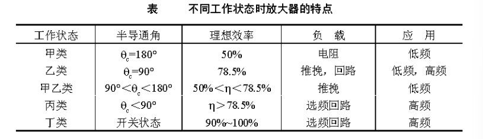
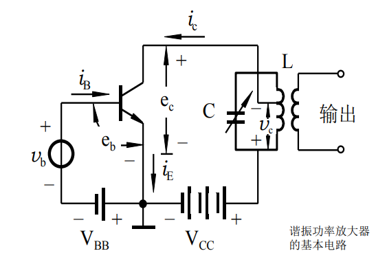
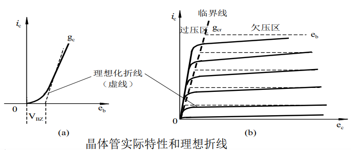
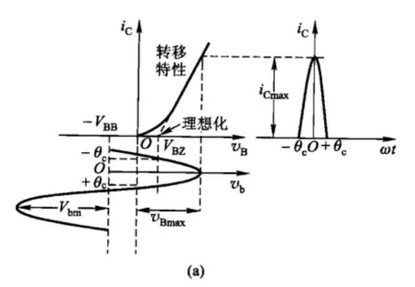
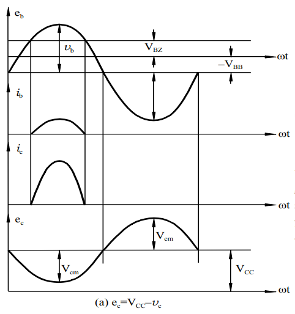
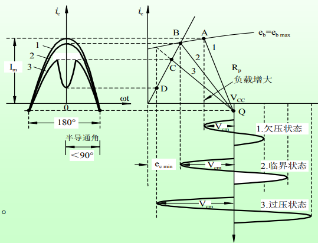

高频电子复习随笔
本文最后更新于：7 分钟前
1 前言
也快学期末了，是时候复习一下专业课了。
今天简单复习一下高频第五章的课，过这么久也就别指望能深入到每条公式来复习了，还是更注重作业题吧。
2 课件
2.1 概述
第五章题目是高频功率放大器，作用和其出现的理由如下：
- 作用：放大高频大信号，使得其在发射机的末级能够获得足够大的功率
- 出现理由：解决高效率与高功率输出两个问题
简单来说，这种放大器有如下特点：
- 工作频率高
- 相对频带宽度窄
- 负载形式为选频网络
- 工作在丙类/乙类状态
关于放大器的甲/乙/丙等类工作状态，找个时间再复习一遍吧
目前暂时理解为跟通角 有关吧。
感性上来理解，功率放大器简单说可以看作“能量转换器”，将供给的直流能量转换为交流能量，从而放大信号。
接下来会随手记录一点本章重点、题目以及个人理解：
- 谐振功率放大器的工作原理
- 折线法分析👆这个东西
- 应用电路
- 习题实践
大概这四个部分吧。
2.2 谐振功率放大器
2.2.1 原理
牢记老师叮嘱，先上图。
谐振功率放大器的原理电路：

可分为四个部分：- 中间晶体管：起到放大作用的有源器件
- 右侧谐振回路：负载
- 下方俩直流偏置：为晶体管提供直流能量与静态工作点
- 左侧高频信号：输入，提供待放大的信号
晶体管的特性曲线：

左图为输入特性曲线，右图为输出特性曲线
很明显是非线性的，所以用理想折线进行近似，此处 就是截止偏压。由于这玩意工作在丙类状态，要求通角 不是要 嘛，所以后面通过 和 的配合便可以控制通角的范围。具体见下图。
工作在谐振功率放大器中的晶体管特性曲线：

中间就是晶体管的特性曲线，跟上面一样。
下方是输入端的曲线，可以看到通过 的反向偏置，使得通角被限制在了一定的范围，可以假象一下若没有 的反向偏置，通角便会增大。
右侧是输出端电流曲线，可以看出输出的集电极电流为尖顶余弦脉冲。
尖顶余弦脉冲输入到谐振回路中，经过滤波作用，便可以输出正弦信号了。
晶体管各部分 V-I 关系曲线

2.2.2 功率与效率
谐振功率放大器的功率可以分成三个部分：
- 输出直流功率
- 输出交流功率
- 晶体管的集电极耗散功率
这三个功率之间的关系为：
衡量谐振功率放大器的效率，集电极效率：
2.2.3 折线法分析
先上图：

折线法分析其实主要是上面第一张图，不过出于个人因素，先记录一下之前模电就没有完全理解的第二张图。
这里的输出特性曲线，实际上每一次只能挑其中一条看，之前很多时候都误解了这一点。临界线，实际上可以理解为：在很多次不同的 给定的情况下，随着 增长， 转折的点所拟合出的一条直线。（啊，写出来也不知道对不对，先这样理解吧）
再说一下这第一张图，首先右上角的原型就是输出特性曲线，也就是刚刚说的给定一次 的情况，左侧为输出电流和输入信号的关系，下方为 和输入信号的关系。
输出特性曲线这里，随着负载的增大， 和 都在变化，以 B 点为分界，A 点这边是欠压，C 点这边是过压，顺带一提，这里的“欠”和“过”描述的电压，是指的交流输出电压。
2.2.4 做题能用上的变量关系
波形系数：
通常会给出通角，波形系数根据通角查表可得
输出功率：
谐振阻抗：
谐振啊，谐振